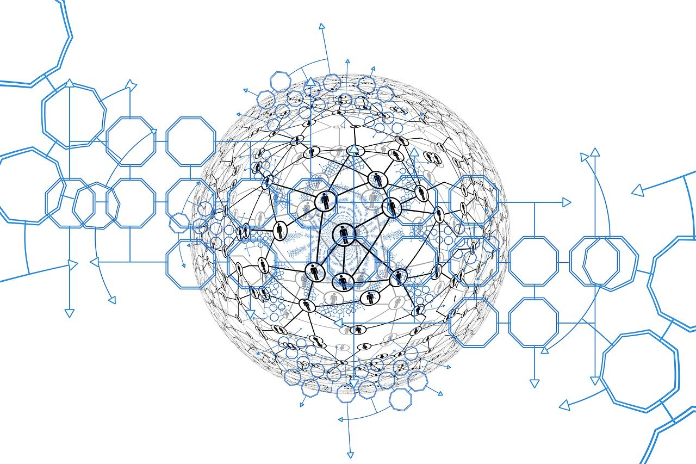
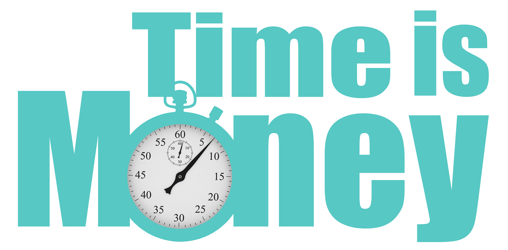
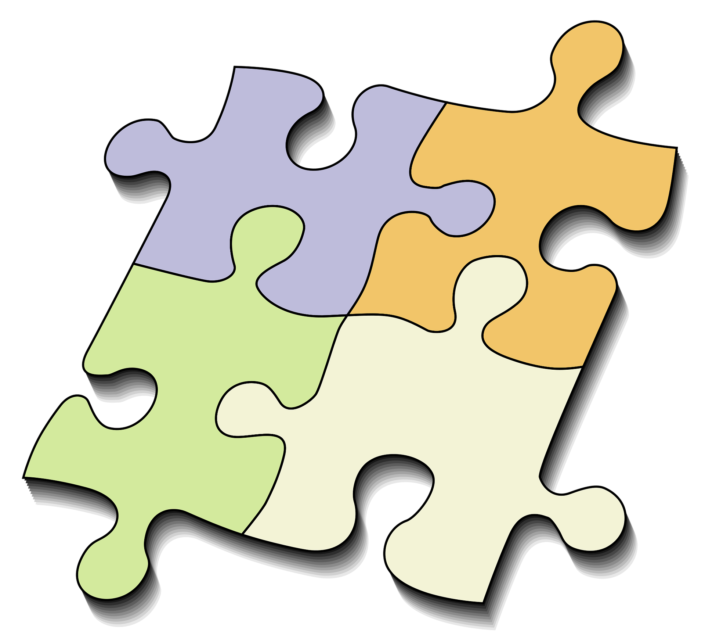

Fondations techniques : Blockchain, Smart Contracts et Proof of Purchase (PoP).
Notre modèle s’appuie sur une infrastructure conçue pour supprimer les intermédiaires financiers et garantir la sécurité des actifs. Deux piliers : la blockchain pour la sécurité et la traçabilité, et les smart contracts pour l’automatisation intégrale des flux.
La blockchain est un grand livre de compte numérique et décentralisé. Au lieu d’être stocké chez une seule banque, ce livre est copié et partagé sur des milliers de nœuds. Toute modification illégitime est rejetée par les autres copies : le registre reste transparent et infalsifiable.
Un smart contract exécute automatiquement les termes d’un accord dès qu’une condition est remplie. Avantage : pas de gestionnaire ou de notaire à mobiliser ; le code applique la règle à vitesse électronique, sans erreur et sans frais d’intermédiaire.

La maîtrise algorithmique du temps réel est notre stratégie pour délégitimer la finance traditionnelle et récupérer des marges cumulées disproportionnées. Dans le système financier classique, la latence (le temps entre l’engagement et le règlement) est la source principale du risque facturé. Plus le temps s’allonge, plus la facture s’alourdit.
En annulant cette latence via l’exécution immédiate du smart contract et une proposition d’affacturage en temps réel, Étika réduit fortement le risque lié au temps. On supprime ainsi l’argument central qui justifie les marges des marchés : la tarification du risque temporel.
Ce faisant, nous limitons la spéculation et créons un circuit de financement direct au service d’un écosystème plus solidaire, éthique et respectueux de l’environnement.
Le smart contract orchestre la chaîne de valeur : activation des jetons, service d’affacturage, rémunération du capital-investissement et réinjection des intérêts — le tout à vitesse électronique, sans intervention humaine ni validation bancaire.
La blockchain garantit la sécurité et la traçabilité : registre partagé, infalsifiable, intégrité renforcée de l’épargne et des transactions.
Les membres de la communauté peuvent héberger le système en exécutant un nœud. Chaque nœud valide le réseau : la confiance est distribuée, la souveraineté renforcée, la dépendance à un tiers supprimée.

Pour rester efficace et sobre en énergie, Étika n’utilise pas de consensus énergivore (type Proof of Work). Nous avons conçu un mécanisme adossé à l’usage réel : le Proof of Purchase (PoP).
Triple validation algorithmique : le smart contract exige la confirmation synchronisée de trois preuves de valeur :
L’enregistrement de ces trois actions, en temps réel et en synchronisation, déclenche la chaîne de rémunération. Cette exigence de précision garantit l’intégrité du consensus et la sécurité des actifs.
Résultat : un système aligné sur l’économie réelle — direct, sobre et transparent — où le pouvoir de décision se convertit immédiatement en valeur financière sécurisée.
